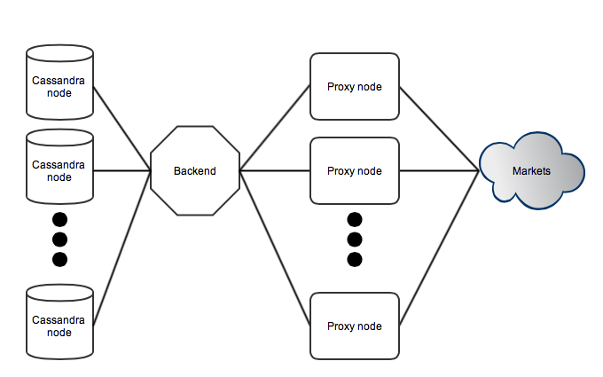

Posted on October 23, 2013
This post will describe a recent project of mine; fetching bitcoin market data using Haskell. I will give a brief introduction to the problem being solved, the solution, and describe what benefits Haskell provides.
Introduction
Bitcoin markets typically offer some public API built around the JSON format. Through HTTP requests you can retrieve the current order book and complete trade history. An example of existing formats is a standardized version established by bitcoincharts. A simple fetching program could simply poll each market repeatedly and dump the results, maintaining some state related to the latest retrieved trade. There are a few issues with this simplistic approach, since it implicitly relies on requesting data from a single node and some database backend is probably needed as well. Another take on this is splitting up the fetching across several nodes and managing the role of each node. Such a distributed system allows lower dependence on single nodes and also makes scaling a lot easier. There is also the problem of having assurance in your implementation. Haskell is a big part of the solution, since all components of the program can be expressed on an abstract level, and the type system allows imposing restrictions on a subset of the program.
Distributed approach
Consider the following sketch of a system where the Cassandra database storage, a single backend node, a proxy layer, and third party markets are split up into layers.

The backend is responsible of managing all active markets and basically parses a configuration file for each market. It maintains state related to when a given market should be polled next. Proxy nodes connect into the backend and are managed using separate threads, which then communicate with application logic using channels. Communication with the proxy layer is abstracted into a monad transformer which is used by a set of functions. This allows managing proxy nodes, market requests, and retransmissions by simply calling some high level function.
The proxy layer is basically a collection of simple nodes pooled together. The goal is to isolate public-facing communication into these proxy nodes and keep a clean interface towards the backend node. When the backend decides that some market state needs to be updated it transmits a request to some randomly chosen proxy node. The proxy nodes parses the included configuration and deals with HTTP specifics upon connecting to the given market. The response is then serialized into a binary blob and sent back to the backend. Upon receiving this response all processing related to order books and trades kick in, and results are pushed into a Cassandra cluster (which is a distributed database).
Layering all logic in this way allows easy abstraction of features and also handles assurance in implementations. For example all communication between the backend and proxy nodes is over a well-defined protocol and HTTP-related connections (with all the related complexity) are strictly isolated to proxy nodes. Hence unexpected crashes and broken web servers are problems isolated to proxy nodes, and the backend can trivially issue retransmissions and manage the active set of nodes in the background. There is also the benefit of requesting data from a larger set of IP addresses. If a node would ever by IP-blocked (for whatever reason) or have regional connectivity issues it will simply be replaced by the backend until the issues are resolved. In the end the market data will be available if it is available to any node on the internet, given a large enough pool. Another benefit is that scaling the pool is trivial - just launch a new proxy and it will integrate into the system. Updates of proxy software can be applied partially with zero downtime as well.
Update (2013-10-28): This design is not optimal for all use cases, since the backend node is a single point of failure and potential bottleneck. In this case the simple distributed alternative does offer some benefits while not dealing with problems such as distributed state.
Haskell libraries
An important part of this project is the wonderful ecosystem of Haskell; here are some highlights.
Pipes provides construction of pipelines from reusable components. This pattern is heavily utilized throughout this project since many things can be expressed as pipelines, i.e. read some thing, process it, and save the output. Since version 4.0 it is actually possible to comprehend mixing monads within the pipeline, since pipes just adds a monad transformer upon your existing stack. It is truly beautiful. Pipes by itself is good thing, but more importantly there is a separate ecosystem implementing much common functionality in terms of pipes. For example you can easily setup a pipeline fetching an action from a shared STM variable, generate a response object, serialize it, and transmit the result through a socket.
http-streams is an easy-to-use HTTP client which does what you want basically, and doesn’t bother you with specifics. There are however some issues with the underlying SSL dependency which uses FFI, e.g. dependency on compilation flags and segfaulting upon certain errors. It is also important to take great care of all exceptions that might occur, the errors package helps out a great deal here (for example see the syncIO function).
Aeson and cassandra-cql are good examples of translating data through different representations and storing content. Typically a pattern emerges where you create a new type and then express serialization by composing existing instances. An example of this is working around limitations of storing pairs in Cassandra. The driver allows expressing custom serialization into a blob instance, working around existing limitations easily. It also has a great monadic interface when composing queries which are at some point executed on a pool of servers.
Snap and QuickCheck makes testing a breeze. Specifically Snap is used to easily fire up a HTTP server, where each route shares a global communication channel with the actual test case. Using this it becomes easy to simulate a market and for example verify the number of requests transmitted to a specific route (e.g. polling frequency of the order book).
Notes
The source code of the project is available here.
Posted on August 18, 2013
There are a lot of services connected to the public internet and private networks. A crucial part of pentesting different networks involves learning about what software is running and also more detailed information such as versions and configurations. This allows more efficient testing by limiting the number of probable vulnerabilities, but also makes deeper pentesting feasible.
Obviously there are problems when services try to hide their true identity. This might be present in the case of HTTP servers, where the Server field describes the software name and version. In this case the field will typically indicate the correct version, but this simple heuristic will fail in any non-trivial cases, and does not really provide any useful information. Hence a high quality scanner, operating on some category of services, should be to reliably detect software without depending on these obvious fields. The term fingerprinting typically involves reliably detecting software by studying all available information.
Fundamentally there are different domains of information which can be studied. This post covers the Data and Time domain, both of which are applicable to varying degrees with different inherent properties. In both cases it is of interest to classify the software (and perhaps also other properties), by choosing the most likely model that fits the data. Hence you will typically need some reference data set from which models of software combinations can be constructed. Given a set of models, the next step is to gather all the possible information, and retrieve the most likely model.
The data domain is what I consider being basically an application-level packet capture of network traffic. For example this is the transaction of HTTP headers captured when making an HTTP request. The benefits of only utilising this information boils down to simplicity and generality. An obvious example of this is that the underlying network stack and transport path does not affect the information content. If fingerprinting is done in a passive manner (i.e. with a provided packet capture) it might not be optimal. In this case the session keys must be provided. But it is still very powerful in the most common case of active probes.
Classification in the data domain can be done with a range of different techniques. I will describe solving the problem using an artificial neural network (ANN) classifier built using standard primitives. Firstly there is the problem of converting a series of headers into a suitable representation that will be fed into the classifier. This example will only consider the header part, even though the response body will certainly contain useful information when issuing certain requests. The series of headers should be transformed into a fixed-dimensional (length) vector in some way. This vector can then be used as input into a multilayer perceptron (a standard ANN) and be trained using supervised learning (i.e. given data set with input and result). Beginning by stating that the first k headers should be preserved for learning (with some large enough k), this limits the maximum vector length. Each header is on the format “key: value” where “key” belongs to a set of possible keys and “value” may be an arbitrary string or integer. Converting these into our fixed dimensional space imposes some natural restrictions, i.e. take the k first bytes and quantize integer values into ranges of interest. There is also the question of ordering - should headers be sorted according to some predefined ordering? This will obviously limit classification based on ordering properties and should be used carefully.
Labeling all the keys (quantization) can be done by evaluating them over an autoencoder ANN. This is constructed as a three-layer perceptron where the input and output layers are identical when learning is complete. The inner layer is smaller and represents compressed versions of all the inputs. Hence when learning is complete (i.e. inputs and outputs match for all labels), the first two layers can be extracted without losing any information. The output given by the inner layer is then used to construct label representation in the header vector, which in turn is used as input in the classifier. Note that training is simply repeated with a smaller inner layer until the model can’t describe all of the information content anymore.
Given a data set with a set of headers and their corresponding reference services, all the inputs can be built. Typically the fixed dimensional vector will be chunked into fixed length pieces, each corresponding to a row in the complete header packet. Each header row is then labeled as discussed and paired with a fixed length value field. This is a one-time process (including the autoencoder step) and will produce a processed data set that is fit for further real classification, independent of the method being employed. In this case the multilayer perceptron can be trained using the backprop algorithm. The resulting classifier can then be used in practice by performing the “input processing” step for a data set of unknown classification, yielding the most likely software.
The time domain provides a different set of properties but is typically not as generally applicable as classification in the data domain. Lets view HTTP requests from a different perspective; essentially the client makes a request and receives a reply which can be measured as bytes over time, possibly with some meaning associated to chunks of bytes. It is reasonable to believe that different services might produce different amounts of content over time, after all such a concern is not really present in the mind of an average developer. Simply plotting the number of bytes retrieved over time will yield a graph which could be studied manually in order to discern any interesting properties of a specific service. Automatic classification is obviously also interesting in this domain. There has been work done on time series classification which will take the complete data series and perform a classification. Alternatively it is possible to view the underlying service as something stateful. Consider for example that a XYZ service might deliver data through a set of different stages, perhaps performing some initial throttling of bandwidth and loosening up later on. Such features can be detected by taking the observations and comparing them with a set of existing models, extracting the most likely one. In the more general case it is common to use Hidden Markov Models (HMM) which are capable of deducing facts about the internal states by simply performing a sequence of observations. Some very similar work has been done by Burschka (originally presented at the sec-t conference) where encrypted Skype traffic was monitored and the time domain was classified in order to detect the most likely spoken phrases, without access to the underlying audio stream.
There are however some potential issues when dealing with time domain classification. Commonly such an attack would be performed across LANs in a protocol encapsulated with TCP/IP. This interferes with timing in several ways, due to things like IP fragmentation and TCP segmentation, tightly bonded with MSS and congestion control. Obviously there is also the problem of variance over long network paths. Reducing the variance requires relocating probes or working around the problem with a larger set of samples, potentially becoming infeasible in a practical context.
In the end it is probably not feasible to perform classification in the time domain across networks. It might however be practical in certain contexts, e.g. in the case of a reduced network stack or very low latency network links with deterministic stacks. The data domain provides a reasonable set of assumptions and could be used to perform reliable classification for a wide range of services, as long as there is no active interference beyond the trivial cases. Using supervised learning to build a classifier does however require plenty of effort in acquiring a reliable data set over a wide range of configurations. Perhaps this could be improved by performing unsupervised learning while labeling the corresponding output classes in some clever way.
Posted on July 2, 2013
Today I am writing on how it’s possible to find structure in information, bundled with functions, and how this can be applied in practice. This is highly applicable to software development but also comes from an interesting theoretical background.
So, lets begin with information. What can be said about a data set sharing some properties? Is it possible to relate some common operations and make general statements? Lets say we define a data structure working over integers - can it be extended to arbitrary objects forming some property? It would be nice if we could write general algorithms and data structures, with the fundamental constraints in mind, and reuse them to the fullest possible extent.
Algebra is a mathematical field which discusses, amongst other things, sets and related functions. This allows us to encapsulate information by providing a set of rules that need to be satisfied, in order for the information and possible functions to belong to some abstraction. In this post a basic set of abstractions are described and some practical examples are given. These are bundled with corresponding definitions in Haskell code, but the reader does not need any previous knowledge of the language in order to grasp the essence of these constructs.
Algebra
Lets begin with some definitions required to discuss these topics. Given a binary function f(a, a) (denoted inline † ) over a set S, the following is of interest (for all a, b, c ∈ S):
- function associativity: (a † b) † c = a † (b † c)
- identity element e of S: a † e = e † a = a
- inverse element a − 1 ∈ S of a ∈ S: a † a − 1 = a − 1 † a = e
Furthermore f is closed over S if f(a, b) ∈ S
Adding these properties will make the function and set more capable of expressing different algorithms. But it also constrains the possible implementations (e.g. identity might not always exists), hence it is interesting to choose the smallest possible subset of laws that need to be satisfied.
Lets begin with the basic structures and gradually add more constrains, while studying applications of each subset.
Magma
The simplest possible definition that is covered is the magma. It consist of a binary operation f and a set S. The only requirement is that f is closed over S, nothing more.
Of course this very simplistic definition does not yield any structure in the problem and anything more constrained will still be considered a valid magma. It can modeled in Haskell using a type class on the following format:
class Magma a where
f :: a -> a -> a
Hence any implementation (declared with instance DataType where …) would implement the function. It can be found in the magma package available on hackage.
Semigroup
Semigroups add the associativity property to the magma. The name is derived from being a generalized version of groups, which are described below. Associativity allows a lot more powerful manipulations, which is appearant in the corresponding hackage package semigroups.
Due to the relatively weak typing being applied here there is no difference to the magma-typeclass, except with the name being substituted. Hence associativity is implicit on the type level, at least in this article.
Folding is the operation of transforming a finite set into a single scalar value. Typically this can be realised by simply applying f onto the set repeatedly. This follows since the set cardinality is reduced by one for each application. Singleton sets can be considered as already reduced or invalid, the same applies to $\varnothing$.
Without associativity this must be done while maintaining order and evaluating each operation in some precise way. Associativity allows us to simply study the set of values and apply the reduction in some arbitrary order. For example it is easy to realise a parallel reduction in a tree-like fashion. Simply by taking pairs of elements from the original set and transforming each pair in parallel to a scalar, this can be repeated until the final value is obtained. The final time complexity becomes $O(\log \left\vert S \right\vert)$ given the assumption that constructing {∀ a ∈ S: f(a)} is considered O(1) time, e.g. with a large amount of cores.
A simple example of folding is summing up a set of numbers, or taking the product. In the semigroups package there is also a nice application of non-empty lists being viewed as semigroups.
Monoid
A monoid is a semigroup that is constrained by satsifying the identity property. It’s typically used in a lot of different constructs and is present in the standard Haskell library (the base package). It can be modelled with the following type class, where pure denotes the identity element:
class Semigroup a => Monoid a where
pure :: a
The identity property allows trivial folding in the general case since we can always treat singleton sets {a} or $\varnothing$ by using the identity element, as f(a, e) and e respectively.
Monoids are extensively used within several fields and form a heavily utilized Haskell idiom when writing generic code. An example instance is string-like structures which form a monoid as follows:
instance Semigroup String where
f = concat
instance Monoid String where
pure = ""
This allows easily swapping the underlying string representation if only occurrences of f are used when performing string concatenation. There are also more advanced applications such as statistics.
Group
A group further constrains a monoid by adding an inverse to all set elements. For example 2 is the inverse of 3 in the group (Z5, + ), since 2 + 3 = 5 ≡ 0 = e.
Naturally negated numbers (as members of Zk) form candidates for inverses. But it is not really applicable to strings and string concatenation. Groups are however heavily used as building blocks for more advanced constructions, which will not be covered in this post. They are also fundamental in algorithms such as the General Number Field Sieve.
On hackage, a declaration can be found in the groups package. The typeclass can be given as:
class Monoid a => Group a where
finv :: a -> a
Conclusions
There is an implementation of Fenwick Trees available here, which identifies and implements a semigroup-based structure. I might write a detalied blog post on it in the future.
The benefits of the algebraic approach can be narrowed down to two points:
- Writing the implementation in terms of algebraic structures minimizes code repetition and allows trivial generalization.
- Working over some structure of a certain type constrains the implementation and eliminates a set of mistakes, such as using specific constants or relying on implicit assumptions in behaviour. This follows since all operations must be well-defined over any instance of the chosen structure.
This survey has been quite limited in practice since it only bothers with some basic concepts in algebra. In languages such as Haskell there is also a lot of usage from category theory, where concepts such as categories, functors and monads exist.
There are some practical difficulties since typeclasses are seldom given as expected. For example the base package defines a monoid in isolation, which implies that there is quite some repetition when defining structures. This is also present in the definitions of other classes such as monads. Reality does unfortunately not always meet the theoretic beauty…
For further information I can recommend the book “A First Course In Abstract Algebra” by Fraleigh, and also looking into category theory and different applications in Haskell.
Posted on June 20, 2013
Introduction
This post will study the problem of reliably detecting blind SQL injections, and more specifically how statistical methods can be utilized.
First lets begin with defining blind SQL injections. Basically a SQL injection is considered blind when there is no direct result being observed in the reply generated by a server, but it still executes code supplied by an attacker. Hence one option is to resort to observing side-effects, e.g. timing, external connections etc. The focus of this post is to provide more reliable detection of timing-based blind SQL injections.
Typically blind SQL injections are detected by running a query which consumes a lot of time. Such a query might for example be sleep 5000, which would delay the server response in 5 seconds. There are some basic potential issues with this approach:
- There is an implicit assumption of some deterministic (in the time domain) function, such as sleep.
- Large sleep intervals (or heavy computations) will be easy to detect when monitoring a system. After all they would be chosen as to stand out of the typical response time distribution.
- Load fluctuations on the server side and networks effect will make it less reliable.
- Large offsets may result in server timeouts.
Statistical approach
Before describing a statistical model of deciding if a blind SQL injection actually exists, I will describe some desirable goals.
First of all, it would be great to make all underlying assumptions clear and describe relationships between different parameters, i.e. having a well-defined problem. It would also be great to generalize the blind SQL part to other databases and different kind of queries.
A basic assumption would be to have a payload executed on the target machine resulting in a significant delay, before it transmits the reply. This is rather vaguely worded but will be heavily dependent on parameters, as presented in the coming section.
Given the ability to submit some passive probe fpassive (a normal request) and some active probe factive (with the potential injection), it is possible to build two distributions of response times. You can think of the distributions as two histograms (or tables) of values. This allows us to incorporate information from several requests into deciding if there actually exists a blind SQL injection. The basic approach is to either confirm the existence of a blind SQL injection or keep on making requests, hence adding more information. The goal would then be to tell if there is a significant deviation between the distributions, a problem which can be handled using statistics.
Bootstrap and hypothesis testing
The section will present the bootstrap and how it can be used to define if two distributions are “equal”, while still not breaking any assumptions.
Given a set of observed values (such as response times of a passive probe) as a vector x1, x2, . . . , xn, we would like to define statistical measures on the underlying distribution. This is typically not trivial since a response time distribution might differ from some N(μ, σ2) distribution, partly since the central limit theorem is not applicable in the general case.
Non-parameterized bootstrap (the version used here) provides a way of defining a proper distribution based on the given set of samples. It is defined as follows:
- Given some set of samples x1, x2, . . . , xn drawn from X1, X2, . . . , Xn , the distribution formed by X * 1, X * 2, . . . , X * n can be estimated by taking B samples on the form x * 1, x * 2, . . . , x * n from the original set (with replacement), and it converges as B → + ∞ (or when all B possible samples have been taken).
Underlying this theorem is the idea of X * 1, X * 2, . . . , X * n representing the acquired samples. Typically the parameter B will not cover all possible sets of samples, hence we are left with an approximation (this is due to to the exponential increase with respect to n).
Given this distribution it is possible to evaluate different types of estimators, i.e. different statistical measures. In our case it is of interest to study θ(b) = {fpassive}b − {factive}b, the difference in arithmetic mean between the b’th sample of passive and active probes.
By evaluating θ(b) for b = 1, . . . , B, for some chosen B, a distribution of difference in arithmetic means is constructed. This distribution can then be used to draw statistically sound conclusions, and construct confidence intervals for these results. A confidence interval can be constructed using the percentile method, which basically corresponds to the lower and upper percentiles of the distribution with respect a significance parameter. In this particular case we would like to survey if there is some significant difference indicating that a blind SQL injection does exist. This corresponds to the null hypothesis H0 : ‘There is no blind SQL injection’. It will be evaluated over the given distribution for some significance level parameter α (typically 0.05 or 0.01). If the null hypothesis is rejected this implies that a blind SQL injection does exist (at the specified significance level), or else no conclusions can be drawn (at least according to this specific definition).
Example implementation
A sample implementation exists at blind-sqli-stats which implements bootstrap, the percentile method, and hypothesis testing. All input measurements are read from stdin, which would correspond to an asynchronous HTTP request in a real life implementation. It is constructed in a way that only requires a small initial set of samples from {factive} and {fpassive}, and will then expand both sets with one element until the null hypothesis is rejected, or some upper limit in the number of samples is reached.
There are also a few sample distributions included. All of these are normally distributed with mixed classifications (i.e. both significant and non-significant examples), but the actual implementation should be able to handle arbitrary distributions.
An important function is ‘rejected’ which decides if, based on the two sets of samples, the null hypothesis should be rejected. It is implemented as follows:
bool rejected(const std::vector<double> & x,
const std::vector<double> & y)
{
std::vector<double> bootStrapped;
bootStrapped.reserve(BOOTSTRAP_SAMPLES);
for(auto b = 0U; b < BOOTSTRAP_SAMPLES; b++)
{
auto xSample = sample(x, x.size());
auto ySample = sample(y, y.size());
bootStrapped.push_back(
average(xSample) - average(ySample)
);
}
std::sort(std::begin(bootStrapped), std::end(bootStrapped));
auto bounds = getInterval(bootStrapped, SIGNIFICANCE_ALPHA);
return(bounds.first > 0 || bounds.second < 0);
}
Basically the two input vectors are sampled B times and the difference in arithmetic means is saved for each sample. getInterval is applied to retrieve the corresponding bounds of the confidence interval, and if zero is excluded then the null hypothesis can be rejected (at SIGNIFICANCE_ALPHA).
Here is an example run demonstrating the ability to detect significant differences (2*100 samples available with an offset of 0.01 seconds):
d@burk:~/work/sqli-stats$ head -n1 data/normal_5
# N(0.3, 1/30) and N(0.29, 1/30)
d@burk:~/work/sqli-stats$ ./out < data/normal_5
Null hypothesis rejected: blind sql injection highly likely
Discussion
This implementation demonstrates how all assumptions have been made clear and provides reliable decisions. There are however several parameters that likely need to be tuned to fit the needs of specific implementations and use cases. For example the significance level α and the number of bootstrap samples B should typically be set according to computational constraints, while still maintaining sound statistic measures.
Some other practical issues include choosing the minimum number of samples required from {factive} and {fpassive}, and deciding on some upper limit.
Until now all descriptions have been given as the null hypothesis being rejected, or nothing can be concluded. This is of course a naive approach and information regarding probes (e.g. an active probe should result in significant deviation) should allow confirming the non-existence of injections.
I should also mention that the percentile method is very basic and will not render optimal results in all cases. An alternative is the BCa method, which modifies the chosen interval points to account for skew and bias.
Posted on June 16, 2013
This post indicates the beginning of this blog, which will cover various problems and projects, mostly related to theoretic computer science, math, and functional programming.